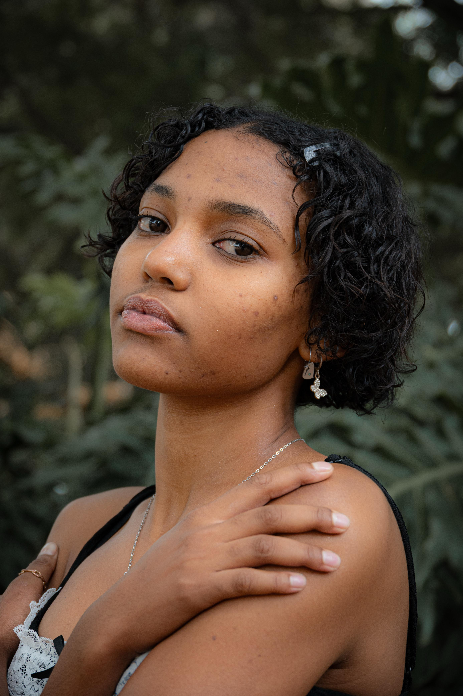

I am Querique Kruger
Welcome to my creative space where art meets passion. I’m a model, artist, and storyteller dedicated to capturing moments of beauty and authenticity.
I am a fast learner, adept at identifying challenges and overcoming them with a confident, positive attitude. My passion and hard work propel me toward achieving my goals. I connect well with people and quickly adapt to new environments. In the face of challenges, I maintain my composure and focus. I am diligent, confident, punctual, and thrive under pressure.
Gallery